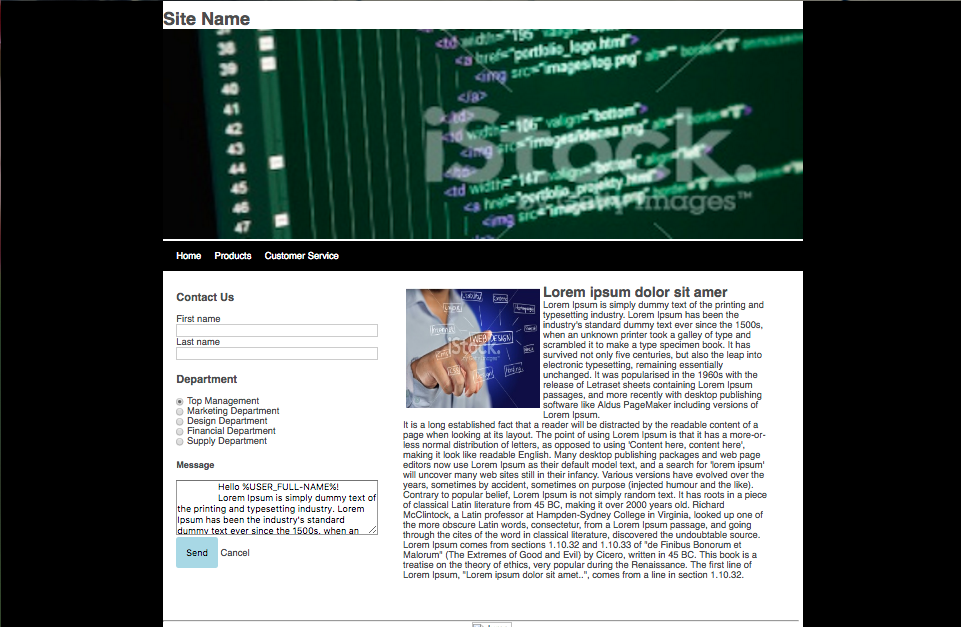
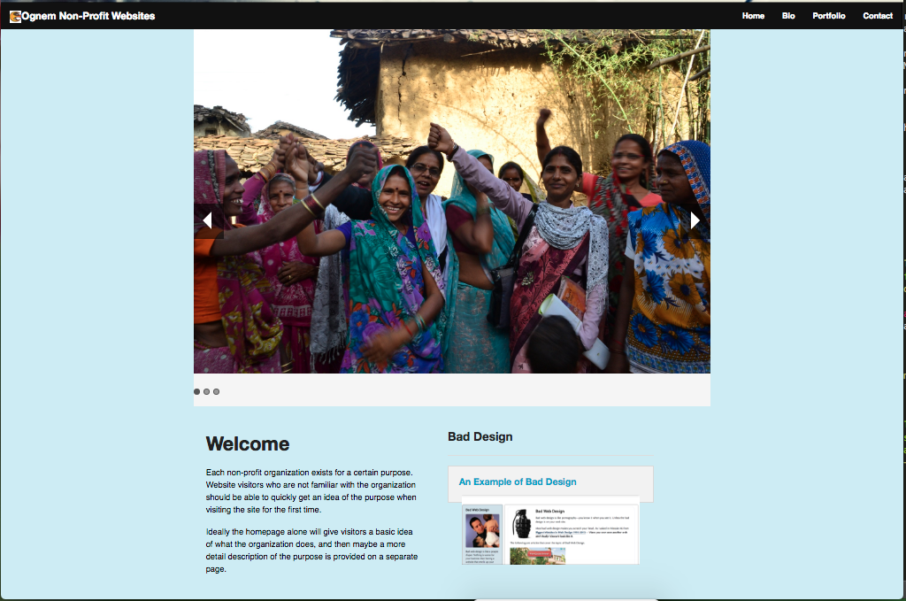
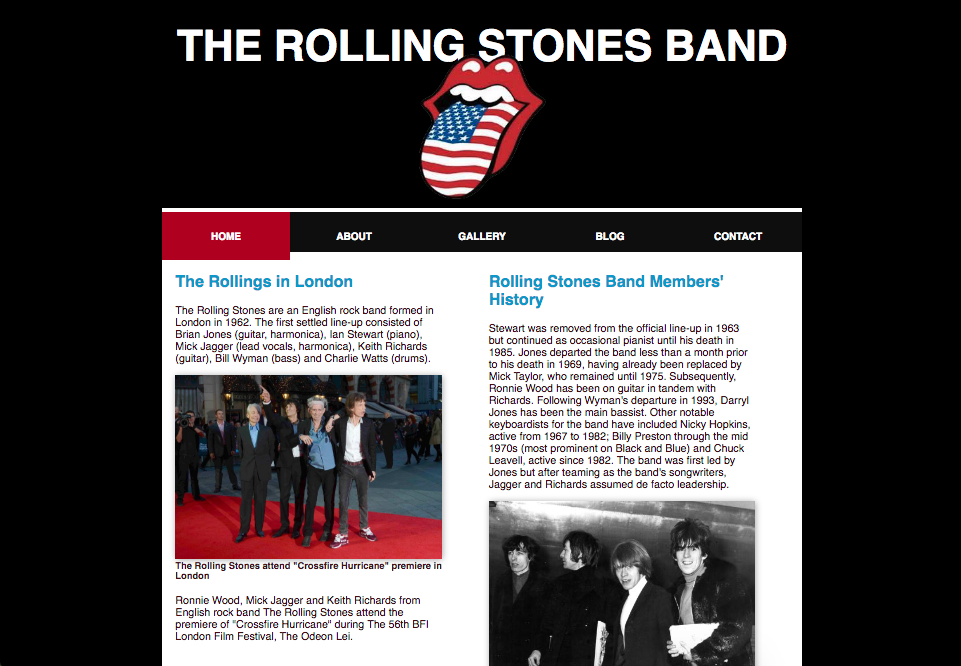
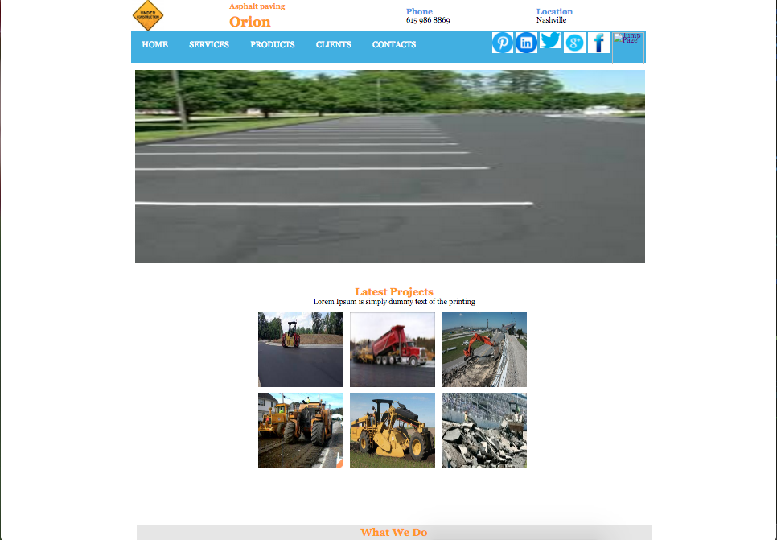

Resume
To take a position as a Web Designer/Developer.
Skills Summary
Languages: HTML, CSS, JavaScript
Sales Software: Salesforce.com, Tap Scan
Excellent Communication Skills, Ability to organize, transfer, store, convert
Manage digital files, Sketch or Photoshop, Site Maps
Excellent time-management, Self-managed and motivated, Availability will be an advantage, Capable of juggling multiple projects, Full life cycle development experience, Ability to thrive in a start up environment, Dependability, Accountability
Experiences
Supervisor/Patient Rep./Financial Services Monroe Carell JR - Children's Hospital at Vanderbilt - Nashville, TN (2012 - Present)
Medical Receptionist/Certified Nursing Assistant Williamson Medical Center - Franklin, TN (2010 - 2012)
Hostes/Cashier/Bookkeeping Puckett's Groceries & Restaurant - Franklin, TN (Jun 2010 - Nov 2010)
Consular Clerk South African Consulate General - Munich Germany (2007 - 2009)
Education
Accounting, Certified Nursing Assistant, BFA in Web Design and Interactive Media - Projected Graduation 2018
- Art Grant Recipient
- GPA: 3.8
- Honor Roll
Web Portfolio





Learn More Contact Us